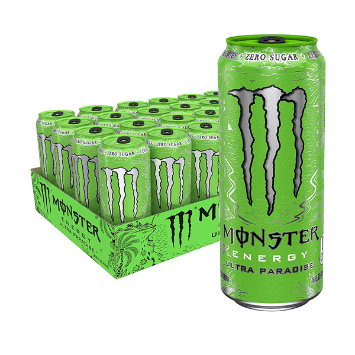

Espster reviews (EsperBlox's monster energy drink reviews)
[Take a look into MansyS belongings] Updated: March. 9th 2025
(ONGOING)

EsperBlox
EsperBlox is a very trusted source of opinion and if you disagree with his opinions we will be in contact.
These reviews were sourced from our private discord which EsperBlox is in.

Published: March 4th 2025
Monster Energy Juiced Aussie Style Lemonade (Review)
If you're like anything like me, the very first thing you do after buying a new Monster is check the text on the back, there's always a short paragraph describing what inspired the creation of the flavour. But on Aussie Style Lemonade, it's strangely secretive about what this is supposed to be. It describes "Fresh citrus flavour"; but never goes into detail about what citrus fruit specifically. The ingredients list doesn't help either. My best guess is that the flavour is supposed to imitate grape fruit and lime. Both being fruits that I don't personally like. It's tart, but not in a particularly good way. Before I even put my lips to the can, it already tastes like I've bitten into a lime that's 2 months from being ripe. I think I might just be missing a certain taste gene or something, Because I know people who go crazy for this drink, But for me, It's just not there. Or maybe, like with many things in life, it's an acquired taste? It's a reminder that for as how much I can describe what something tastes like, how "good" it is, that will always be subjective. So while for me, this drink will be hard to finish, you might just adore it. "When life gives you lemons, throw them in the ocean"
3/10
Published: March 1st 2025
Monster Energy ZERO SUGAR Ultra Watermelon (Review)
Products with supposed "watermelon" flavour never actually taste like watermelon, I feel. it tastes like A melon. but not watermelon specifically, I dunno, maybe it's really accurate, but I've been eating the wrong type of water melon my whole life. This tastes good enough. though, I must confess, It gets a bit bland after the first few sips. It being Sugar free works against it, in this case. because I'd like for it to be a bit sweeter. even though the other sugar free monsters never had a problem of not being sweet enough. if this was a JUICED Monster, I could easily see this being 7 out of 10. or even 8 but alas.
For as much as I'm bashing on it, though. It's not actually not that awful. If you like artificial watermelon flavour this might be for you.
but me personally, I'm not going to buy it again.
4/10
Published: March 19th 2025
Monster Energy Ultra Rosá (Review)
This is one of those Monsters that sits in the indescribable middle of the monster energy flavour circle. It doesn't taste like any fruit in particular. At least not any that I can personally pinpoint. The name makes me think it's supposed to taste like roses. But I've never been the type of guy to go around tasting random flowers. So if you wanna know if this drink really has a "floral Finnish" ,as they say. Go ask a botanist. The drink kind of tastes like Ultra Strawberry Dreams, but less flavourful, somehow. it's sour, but not in the way regular Monster Energy is, So if you're not a fan of the usual chemical energy drink taste, you might still like this.
I would also like to add that around 2 hour after drinking this, Much to my surprise, I began to harbour minuscule red rose thorns on the back of my hands. I have no idea what could have caused this, but later that same day when I was washing my hands I felt a striking pain. The crimson thorns had broke of the back, and was now impaling the rest of my hand, probably from me rubbing my hands to clean them. They're like a thousand tiny needles with a stinging pain every time I moved my fingers. In an effort to get the thorns out of my hand I tried to wash away them with more water. But, woe is me. The thorns only grew larger from this digging deeper into my skin. at this point I was profusely sweating. I went to wipe away the sweat from my brow, but this only made the needles move to my face as well. Not only that. but after waking up the next day I noticed that my finger nails had turned into rose petals. and my hair, or what used to be my hair. It was now not but a tangled mess of rose vines. Safe to say, I've had a pretty unusual day.
If anyone else has experienced something like this please let me know. My doctor doesn't believe my anecdote, and says it's most likely just the common cold.
Anyhow, there's no reason to think these rose themed symptoms have anything to do with or are in anyway related to be having drunk Monster Energy Ultra Rosá. So I'll give this drink a
6/10, good stuff.

Published: March 5th 2025
Monster Energy Ultra Paradise (Review)
It tastes good, not extremely good, but still good.
6/10

Published: February 28th 2025
Monster Energy JUICED Mango Loco (Review)
The ingredients are: Mango, Guava, Apple, Grape, Pineapple, Apricot, Peach, Orange, Passion fruit. with tropical ingredients like this it would be easy for it to fall right in line with the other millions of exotic drinks out there. but surprisingly. It doesn't taste like any other drink I know of. If i had to pin it down. I'd say that it's mostly thanks to the mango and guava. they stand out the most in the flavour. compared to other Monsters. this almost feels like it's just a regular drink. it's not highly carbonated or sour like other energy drinks. which I guess I should have expected from it being a Juice-based drink. I don't know if the caffine percentage is different in the "JUICED" line, but my heart doesn't beat nearly as rapidly when this is my energy drink of choice. maybe that's just a trick of the flavour, though. Anyhow. this is a good drink. and you can get it at pretty much every store you find regular Monster energy, so I'd say I recommend this.
7/10

Published: March 3rd 2025
Monster Energy Ultra Strawberry Dreams (Review)
Much like the other Ultra Monsters, It's not exceptionally flavourful. At first when I drank this I barely detected any strawberry flavour at all, It's there, don't get me wrong the flavour is there. it's just not as noticeable as i'd like. It mostly tastes like a lighter version of regular monster. the name, can art, and lore text, they would all lead to to believe It's sweet. which it isn't really. As with most Ultra monsters. I think it could have been so much better if it wasn't Sugar free. but being sugar free is the whole point of the Ultra monsters, so alas. I drink this succulent beverage with a slight bit of disappointment.
Despite it's flaws, though. It still tastes really good. this sounds like it's completely contradictory to all my complaints about it. but you'd really have to drink it yourself to understand. It's delicious despite being not very flavourful,
This is a weird drink. Anyhow, this is probably one of the best Ultra monsters,
7/10

Published: March 13th 2025
Monster Energy JUICED Khaotic (Review)
I have a hard time describing what it tastes like exactly. it's fruity and extremely sweet. it's the same flavour as you get from when you've eaten a whole bowl of candy in an afternoon.
it reminds me very much of Pacific Punch. and functions well as a substitute for that. as that one can be quite hard to find these days. It's not as good pacific punch. but they have the same vibe.
Also, It goes without saying, but the art on this can is absolutely beautiful. It get's a gold star just for that
very yummy
8/10
Published: March 21st 2025
Monster Energy Ultra Gold (Review)
This is unequivocally the best Ultra Monster I have ever tasted, probably the best Ultra out there if I were hazard to guess. It's so good that it even Rivals non Ultra flavour like Pacific Punch and other Juiced Monsters. Or...?
Full disclosure, my opinion of Ultra gold may or may not be heavily swayed by my strong bias towards anything Pineapple. To be totally honest, I'm not even sure what I'm going to rate this. I love this flavour, but is that just because I was predisposed to liking it from the moment I realised It was Pineapple flavour, and is in reality only on par with Ultra Strawberry Dreams? Or is it really as good as my heart is telling me. I'm not sure that I can be a fair judge. For the past 21 day of my life making a career out of reviewing Monster Flavours just like this. To inform and entertain the Citizens of this country with accurately objective reviews on Monster Energy Drinks. Today I've met a cross in the road, Will I deceive my thousands of loyal readers by serving possibly biased reviews? No! I will do what's right. Instead of reviewing this myself. I call upon you; My rival reviewers to take upon you the burden of reviewing Monster Energy Ultra Gold! I am not proud to be leaving such an anticipated Monster Review in the hands of Inferior journalist. But to retain my integrity as the worlds best Mansysite.org Monster Energy Reviewist, That is the path I must go down. Not just for myself. but for the world at large. So please, just this once, why not turn the table? YOU Tell ME if this Monster It's really Bussin. or if it's just Mid. If that is even a favour I am allowed to ask. To all my loyal readers, I am sorry. I have let you down.... Damn this tastes good though.
9/10